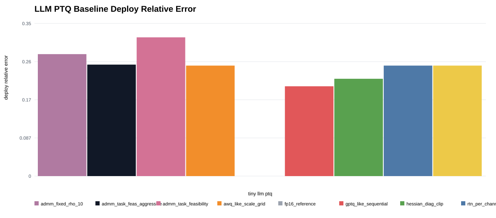
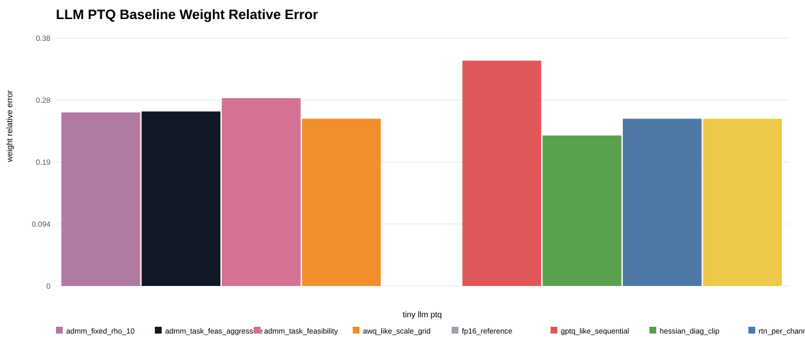
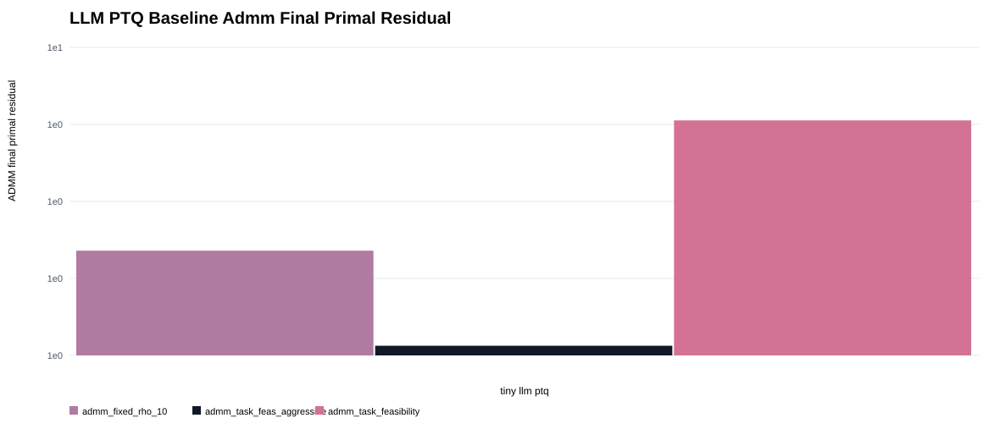
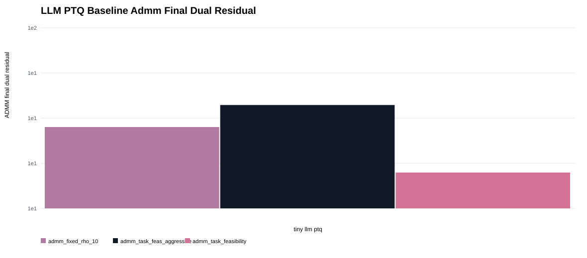
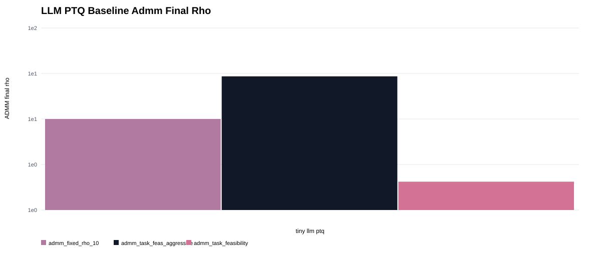

LLM Quantization Baselines
Local proxy baselines for synthetic transformer-block PTQ: RTN, Hessian-aware clipping, GPTQ-like compensation, AWQ-like scaling, SmoothQuant-like scaling, and ADMM variants.
Llm Quant Baseline Deploy Rel Error

Llm Quant Baseline Weight Rel Error

Llm Quant Baseline Final Primal

Llm Quant Baseline Final Dual

Llm Quant Baseline Final Rho

Grouped Metrics
| method | family | deploy_rel_error | weight_rel_error | final_primal | final_dual | final_rho |
|---|---|---|---|---|---|---|
| fp16_reference | external_proxy | 0 | 0 | |||
| gptq_like_sequential | external_proxy | 0.2049 | 0.3431 | |||
| hessian_diag_clip | external_proxy | 0.222 | 0.2291 | |||
| awq_like_scale_grid | external_proxy | 0.252 | 0.2547 | |||
| rtn_per_channel | external_proxy | 0.252 | 0.2547 | |||
| smoothquant_like_scale_grid | external_proxy | 0.252 | 0.2547 | |||
| admm_task_feas_aggressive | admm | 0.2543 | 0.2657 | 1.075 | 37.37 | 29.42 |
| admm_fixed_rho_10 | admm | 0.2782 | 0.2642 | 2.187 | 28.21 | 10 |
| admm_task_feasibility | admm | 0.3164 | 0.286 | 5.794 | 15.8 | 2.048 |